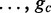
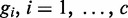

January 2013 in Nucleic Acids Research
Accurate human microsatellite genotypes from high-throughput resequencing data using informed error profilesDOI: 10.1093/nar/gks981
Abstract
Repetitive sequences are biologically and clinically important because they can influence traits and disease, but repeats are challenging to analyse using short-read sequencing technology. We present a tool for genotyping microsatellite repeats called RepeatSeq, which uses Bayesian model selection guided by an empirically derived error model that incorporates sequence and read properties. Next, we apply RepeatSeq to high-coverage genomes from the 1000 Genomes Project to evaluate performance and accuracy. The software uses common formats, such as VCF, for compatibility with existing genome analysis pipelines. Source code and binaries are available at http://github.com/adaptivegenome/repeatseq.
Main Text
INTRODUCTION
Tandem repeats are dispersed throughout the genome, in and around gene regions. They were first identified as agents of disease ∼20 years ago (1), and since then, several microsatellite repeats (not all of which are triplets) have been identified as the underlying basis for a wide range of neurological and morphological disorders in humans and other mammals (2�4). In addition to causing disease, microsatellites can exert subtle effects on gene function and quantitative traits [reviewed in (5)]. Repeats are also mutational hotspots in that their instability can be triggered by nearly any aspect of DNA metabolism, and even transcription or stress [reviewed in (6)]. This sensitivity to defects in repair and cellular insults makes repeats useful markers for genome instability and cancer (7,8). Further, analysing repeats in personal genomes promises benefit not just to medical genetics and the diagnosis of repeat-related disorders but also to forensics and genealogy, where shorter and more stable tandem repeats can serve as DNA fingerprints to uniquely identify individuals (9,10). The use of accurately and globally measuring tandem repeats spans medicine, genetics and biotechnology; repeats influence clinical and subclinical phenotypes, are signatures for genomic instability and cancer and are important markers for forensics and genealogy.
Despite their use and biological importance, some repetitive sequences (particularly microsatellites) are challenging to study with short-read sequencing technology. Genotyping microsatellite repeats from reference-mapped reads is fundamentally distinct from calling SNPs or indels in non-repetitive sequence because there is no sound basis for inferring homology between pairs of aligned repeat units. Microsatellite genotypes must be assigned in terms of allele length or the number of sequenced bases within a read separating the non-repetitive flanking boundaries aligned to the reference, irrespective of intervening alignment gaps. Furthermore, reads must span an entire repeat track to confidently support an allele length. We recently demonstrated the advantage of this repeat-aware genotyping approach in a population-scale analysis of >100 inbred isolates from the Drosophila Genetics Reference Panel (DGRP) (11,12). Here, we describe a comprehensive genotyping software package that we have termed RepeatSeq, for calling microsatellite repeat genotypes from whole genome resequencing data. RepeatSeq combines a repeat-aware method for repeat allele determination (11) with a Bayesian genotyping approach that uses a novel error model informed by properties of a repeat sequence and the reads that map to it.
Current approaches for identifying repeat mutations include indel genotyping methods implemented in popular software suites, such as GATK (13) and ATLAS2 (14), that can reveal indels within repeat regions or the recently reported lobSTR method (10), which much like our approach, considers repeats in their entirety. Indel callers are ill-suited for identifying repeat mutation, as they do not report repeat genotypes, they can base indel identification on reads that do not fully span the repeat and they fail to account for the error rates of different repeat types. The mutation rate of microsatellite repeats is influenced largely not only by the length of repeat tract but also by other intrinsic properties, such as the size of the repeated unit and the purity (lack of interruptions) of the repeated sequence (15). A genotyping method that incorporates the mutational properties of repeat sequences will be better able to distinguish false alleles from true heterozygosity. However, the success of a genotyping approach relies on more than just the accurate identification of true alleles�the method must be applicable to the greatest number of loci genome-wide. The lobSTR method, for example, makes microsatellite calls genome-wide (10); however, it is blind to homopolymers runs (i.e. mononucleotide repeats, which are a common and important source of genetic variation). In the following sections we describe the RepeatSeq algorithm and error model and its application to high-coverage genomes from the 1000 Genomes Project (16). RepeatSeq assigned genotypes to ∼90% of the repeat loci, including homopolymers. In addition, comparing RepeatSeq to lobSTR revealed that ∼90% of repeats genotyped by both methods were assigned the same call. The software inputs high-throughput resequencing data in BAM format (17) and outputs genotypes in multiple formats, including VCF format (18), for compatibility and easy integration with existing genotyping pipelines.
METHODS
Program outline
The genotyping process is summarized in Figure 1. Reads are first mapped to a reference sequence and then sorted, with duplicate reads marked. Next, reads mapping to reference repeat regions are locally realigned using the GATK IndelRealigner tool. Then, for each repeat, the RepeatSeq module discards reads that do not completely span the repeat, as these reads cannot unambiguously support a repeat allele length. The extent to which a read must overlap a repeat (and match the reference) is an adjustable parameter, although we have previously optimized this value to maximize the number of repeat regions that could be genotyped while minimizing the inclusion of improperly mapped reads (11). Finally, RepeatSeq assigns the most probable genotype using a fully Bayesian approach and considers the reference length of the repeat, the repeat unit size and the average base quality of the mapped reads, as previous information. RepeatSeq implements a diploid genotyping model by default, but it can be set at runtime to implement a haploid model.
Several other read filters can be adjusted. For example, reads can be excluded from consideration on the basis of their length, mapping quality and on whether they are properly paired. By default, RepeatSeq returns microsatellite calls in VCF format for compatibility and interoperability with other indel callers. However, RepeatSeq can also output a detailed report that returns annotated alignments of reads in addition to just the assigned genotypes.
Probabilistic determination of repeat genotypes
The probability that a read is representative of a true allele can be inferred by the properties of the read and the reference repeat sequence that it maps to (11). We explored many such properties in a previous DGRP population study (12). The DGRP is composed of >100 fly genomes; each derived from single female founders of a natural fly population and bred to near-isogeny by 20 generations of full-sibling matings. Therefore, in the absence of mapping, alignment or sequence errors, all reads from a single inbred line mapped to a specific microsatellite locus should possess the same repeat allele length, and this homozygosity permits the assumption that deviant reads represent error. To strengthen the validity of this assumption, we minimized the effects of any residual heterozygosity by excluding genomic regions with >5% heterozygosity (based on the SNP calls). For loci to which at least 10 reads had been mapped, reads that supported the majority allele were assumed to support the true allele at the locus, whereas reads that supported a non-majority allele were assumed to be errors. The proportions of reads supporting majority alleles were computed within five bins of equal size for the following properties: reference repeat length, repeat unit size and average base quality for the read. The resulting 5 � 5 � 5 array reflects the frequency of discordant and concordant reads and is the source of error profiles for RepeatSeq.
Once reads are mapped, realigned and then pruned of those that do not span the repeat, RepeatSeq calls the most probable genotype using Bayesian model selection. The error rate ( ) is populated with prior information by associating the reference repeat length, unit size and average base quality of the read data with the appropriate bin of the error profiles. The reads at a given locus support length variants where . RepeatSeq considers each homozygous and heterozygous genotype suggested by the read data, of which, there are . For example, if two length alleles are present then the heterozygous genotype of the two variants and each homozygous genotype are considered. If three variants are present, then the possible three homozygous and three heterozygous genotypes are considered.
) is populated with prior information by associating the reference repeat length, unit size and average base quality of the read data with the appropriate bin of the error profiles. The reads at a given locus support length variants where . RepeatSeq considers each homozygous and heterozygous genotype suggested by the read data, of which, there are . For example, if two length alleles are present then the heterozygous genotype of the two variants and each homozygous genotype are considered. If three variants are present, then the possible three homozygous and three heterozygous genotypes are considered.
Let denote the reads at a given locus. Denote the possible genotypes g1, g2,  denote a heterozygous genotype, where and each represent one of the length variants present in the data. In the heterozygous case, the values and
denote a heterozygous genotype, where and each represent one of the length variants present in the data. In the heterozygous case, the values and  are 3D vectors. The values and represent the number of reads of variants
are 3D vectors. The values and represent the number of reads of variants  and
and  , respectively, and is the number of reads of any other variant. Values and represent the probability that a read at this locus is of variant and , respectively, and represents the probability that a read does not represent a true variant (e.g. a sequencing or mapping artifact relative to the genotype
, respectively, and is the number of reads of any other variant. Values and represent the probability that a read at this locus is of variant and , respectively, and represents the probability that a read does not represent a true variant (e.g. a sequencing or mapping artifact relative to the genotype  under consideration). The homozygous genotypes are modelled similarly with 2D vectors: position one refers to the variant supported by the genotype and the second position refers to all other alleles.
under consideration). The homozygous genotypes are modelled similarly with 2D vectors: position one refers to the variant supported by the genotype and the second position refers to all other alleles.

. For heterozygous and homozygous genotypes, we assume the likelihood is multinomial , and is Dirichlet , where the elements of sum to unity. For the purpose of elucidating the statistical model, let generically denote a homozygous genotype and let The vector  characterizes prior information about the probability vector
characterizes prior information about the probability vector  , and is formed based on derived error profiles. In the heterozygous case, let represent the number of majority allele supporting reads of variant A from the error profiles, and let represent the number of non-majority allele supporting reads from the error profiles. Let and be similarly defined for variant B. Hyperparameters and . In the homozygous case, hyperparameters and , where
, and is formed based on derived error profiles. In the heterozygous case, let represent the number of majority allele supporting reads of variant A from the error profiles, and let represent the number of non-majority allele supporting reads from the error profiles. Let and be similarly defined for variant B. Hyperparameters and . In the homozygous case, hyperparameters and , where  and are as defined previously. The Bayesian model describing the probability of read error given genotype
and are as defined previously. The Bayesian model describing the probability of read error given genotype  is as follows:
is as follows:
This model specification ensures that the posterior distribution weighs the error profile reads equally to reads from the data. We consider the aforementioned model specification for all genotypes

. The marginal distribution of the data given each genotype is estimated, and Bayes� rule is used to compute the probability of each genotype given the data. This strategy is a fully Bayesian model selection algorithm, for which each model under consideration corresponds to one of the genotypes suggested by the data. The marginal distribution of the data for a given genotype iswhere represents the multinomial beta function. This analytical solution is based on conjugacy results. Bayes� rule is then implemented to invert the above probabilities.
where for all . The most probable genotype is then selected, provided that the probability of the genotype is >50%.
RESULTS
Optimization of read mapping for microsatellite repeat genotyping
The accuracy of repeat genotypes is contingent on the proper mapping of reads to repeat loci. There are many short-read mapping algorithms, and their performance has been widely evaluated (19). However, mapping algorithms have not yet been evaluated on their ability to accurately map reads composed of low-complexity sequence. We compared the accuracy of several popular tools, including Bowtie2 (20), BWA (21), Novoalign (Novocraft Technologies), Stampy (22) and SMALT (Wellcome Trust Sanger Institute). First, reference repeats were identified from the hg19 reference sequence using a previously described approach (11). Next, DWGSIM (http://github.com/nh13/DWGSIM) was used to simulate 100 bp single-end Illumina reads from reference repeats from chromosomes 1 through 7 in human reference sequence, with a simulated coverage of 15�. We specified a 2% uniform sequencing error rate and a 0.1% mutation rate, of which 10% of the mutations were small indels (1�10 bp long) and the remainder were point mutations.
Simulated reads were then mapped to the entire human reference sequence. The parameters, runtimes and resource usage for all tools are documented in Supplementary Table S1. The proportion of incorrectly mapped reads is plotted as a function of the proportion of correctly mapped reads in Figure 2 under different mapping quality thresholds. For each mapping quality threshold, the accuracy rate is the number of correctly mapped reads divided by the total amount of reads simulated. Likewise, the inaccuracy rate is the number of incorrectly mapped reads divided by the total number of mapped reads. Assessment of read alignment is based on the leftmost coordinate of the read. Novoalign maps repeat-containing reads with the lowest ratio of inaccurate calls to accurate calls. Among the open source tools, Bowtie2-high (Bowtie2 using the highest sensitivity option) is the best mapping method by this metric. Other settings of Bowtie2, along with Stampy and BWA-SW, performed fairly similarly among each other, but not as well as Novoalign or Bowtie2-high.
Table 1 summarizes the performance of the mapping programs and includes a comparison with the lobSTR method, which eschews conventional short-read mappers in favour of its own method for directly assigning reads to a proper location on the human reference sequence. The table indicates performance cumulatively for all mapping qualities, to enable fair comparison with lobSTR, which does not report mapping quality. Novoalign mapped the greatest number of correctly mapped reads (40 547 527; 93.9%), although SMALT mapped the greatest number of reads overall (41 180 368; 95.4%). LobSTR mapped the fewest number of correctly mapped reads (1 117 142; 2.59%) but also the fewest reads overall (1 118 902; 2.59%). Maximizing read mapping might result in increased numbers of improperly mapped reads; therefore, we also compared mapping methods on the basis of their inaccuracy rate. We found that lobSTR features the lowest inaccuracy rate of 0.16%, followed by Novoalign with an inaccuracy rate of 1.14%. The open-source Bowtie2-high method also performs nearly as well with an inaccuracy rate of 1.18%.
Comparing performance cumulatively for all mapping qualities likely underestimates the accuracy of conventional mappers because even minimal filtering by mapping quality can exclude inaccurately mapped reads. For example, filtering reads based on a minimum mapping quality of 4 lowers the Novoalign inaccuracy rate to 0.007%, at the cost of reducing the number of correctly mapped reads to 40 297 714 (93.3%). At a minimum mapping quality of 3, Novoalign features an inaccuracy rate of 0.33% with 40 436 553 (93.6%) correctly mapped reads. Bowtie2-high performs similarly with an inaccuracy rate of 0.03% (40 213 461 or 93.1% correctly mapped reads) with a minimum mapping quality of 2. Filtering reads by mapping quality allows for optimizing the trade-off of maximizing correctly mapped reads while minimizing the incorrectly mapped reads.
Application of RepeatSeq to whole genomes from a parent�offspring trio
A subset of genotyping error can be inferred by evaluating whether called genotypes from a parent�offspring dataset are consistent with Mendelian inheritance (23). We applied RepeatSeq to whole genome data generated using the Illumina HiSeq and 100 bp reads, from the CEU trio, a family from Utah with European ancestry (CEU genomes: NA12878, NA12891, NA12892). The average coverage of the mapped and post-processed genomes was 42.7� and this coverage dropped to 33.3� at repeat regions. In testing for consistency with Mendelian inheritance, we considered repeats for which calls were made from all genomes in the trio and for which there was at least a single mapped discordant read at the locus in each genome. RepeatSeq requires at least two reads to make a call and for this threshold, 92.1% of evaluated repeat calls are consistent with Mendelian inheritance (Supplementary Table S2). At a minimum coverage of 9�, the percentage of consistent calls increases to 95.3%, and at 17�, the percentage increase to 98.0%.
This consistency test also enables the assessment of the impact of choosing a less informative prior for the genotyping model. We replaced our error profile with a constant rate prior in which we define a single observed concordant reads and no discordant reads for every element of the error profile. This strategy eschews the experimentally derived error profile and instead incorporates weak prior information into our genotyping algorithm. Not surprisingly, the percentage of consistent calls drops substantially. At a minimum of 2, 9 and 17� coverage, the constant rate prior produces calls that are consistent 72.9, 73.7 and 74.5% of the time, respectively (Supplementary Table S2).
Application of RepeatSeq to the HG01140 whole genome
We compared the performance of our genotyper with lobSTR, a recently reported tool that is also the only other genotyper tuned for microsatellite repeats. To perform the comparison, a 16� sequenced human genome (HG01140) from the 1000 Genomes Project was mapped against the hg19 reference sequencing using Novoalign, post-processed and passed to both genotyping methods. The FASTQ files for this genome were mapped using Novoalign and realigned using the GATK IndelRealigner. RepeatSeq was then executed using default parameters to generate a list of repeat genotypes. To genotype repeats with lobSTR, we used the available binaries (lobSTR version 1.0.6) and usage guidelines. First, lobSTR built an index for the hg19 reference genome. The same list of repeat regions used by RepeatSeq was indexed for use by lobSTR. Next, lobSTR constructed a new BAM file (based on the same BAM file used by RepeatSeq) containing its alignments for genotype calling. We used default parameters except that we specified genotyping repeats with a unit length of 1�5. The lobSTR-generated BAM file was then passed to the lobSTR allelotyper tool to produce a list of repeat genotypes.
Table 2 summarizes the comparison of RepeatSeq and lobSTR genotypes. The percentages indicate the fraction of genotypes made from a list of 4 030 980 reference repeat regions. Unlike the earlier comparison using simulated data from chromosomes 1 through 7, this comparison includes all identified hg19 reference repeat regions. RepeatSeq assigned genotypes to 3 604 790 (89.4%) repeats, whereas lobSTR assigned genotypes 106 043 (2.63%) repeats. When the comparison is made by repeat unit size, RepeatSeq assigns genotypes to a similar proportion of repeats for all unit sizes, whereas lobSTR assigned the most genotypes to dinucleotide repeats (64 670; 10.3%). For repeat regions that were genotyped by RepeatSeq and lobSTR, we measured the concordance of the methods or cases in which both methods assigned the same genotype. Genotypes were assigned by both methods for 96 950 repeats. Of these, 85 569 (88.3%) repeat genotypes were the same. The concordance between the methods is lowest for 2mers (83.4%) and increases with unit size, which is expected given that the variability of microsatellite repeats is dependent on the size of the repeated unit sequence. From the 11 381 (11.7%) discordant genotypes, we randomly selected repeat regions and used Sanger sequencing to confirm which method assigned the correct genotype. After sequencing 40 regions, we found that 25 (62.5%) regions were correctly genotyped by RepeatSeq, 4 (10.0%) regions were correctly genotyped by lobSTR and 11 (27.5%) regions were incorrectly genotyped by both methods (Supplementary Table S3).
From the 3 604 790 repeat genotypes assigned by RepeatSeq, lobSTR failed to genotype 3 507 840 (97.3%) regions. This is consistent with lobSTRs greatly reduced number of total and correctly mapped reads for the simulated data (Table 1). However, from the 106 043 repeat genotypes assigned by lobSTR, 9093 repeat genotypes (8.57%) were missed by RepeatSeq. In 5090 (56.0%) of the repeats, lobSTR was able to map more reads to the locus than RepeatSeq had access to, and this likely enabled the assignment of a genotype by lobSTR. In nearly half of these cases (2436 repeats), lobSTR added more than one mapped read to the locus. We also found that lobSTR assigns genotypes if at least a single read is mapped to the locus. RepeatSeq, however, requires at least two mapped reads, as a single read is not sufficient to confidently distinguish a heterozygous locus from a homozygous locus. There were 3819 (42.0%) cases in which lobSTR exclusively assigned a genotype using only a single read. For the remaining repeats genotyped by lobSTR and not RepeatSeq, manual inspection revealed that RepeatSeq failed to genotype many of these repeats because it could not assign a high enough confidence (>50%) to the genotype. Finally, there were 417 097 (10.3%) repeats not genotyped by either method primarily because no reads could be mapped to these regions. In all, RepeatSeq assigns genotypes to ∼90% of repeats in the HG01140 genome, and in the cases where both methods make a call, the concordance in genotypes is ∼90%. Although we did not exhaustively validate the discordant genotypes, we do not see any evidence to suggest that lobSTR generally assigns genotypes more accurately than RepeatSeq.
DISCUSSION
Repetitive DNA sequences pose unique challenges to next-generation sequencing technologies. However, these sequences are too important to ignore, in terms of their frequent occurrence in the genome and their biological relevance. RepeatSeq uses properties of reference repeat sequences and the reads that map to them, to best identify reads that contribute to true alleles. To enable accurate RepeatSeq calls, we first evaluated several methods for mapping repeat-containing reads to the human reference sequence. We found that when we filtered reads by mapping quality, Novoalign and Bowtie2 correctly map >93% of simulated repeat-containing reads to the human reference (compared with 3% mapped by lobSTR) while maintaining an inaccuracy rate that is lower than lobSTR. Filtering reads by mapping quality allowed for optimizing the trade-off of maximizing correctly mapped reads while minimizing the incorrectly mapped reads.
When we analysed the HG01140 genome from the 1000 Genomes Project, we found that RepeatSeq assigned genotypes to ∼90% of the repeats, whereas lobSTR genotyped <3%. The disparity between the methods results likely from the difference in how many reads are mapped by lobSTR and Novoalign. LobSTR did make calls that RepeatSeq missed for 9093 (8.57%) repeats. Of these calls that RepeatSeq missed, 42% were made with the support of a single read. RepeatSeq requires the support of two reads to make calls in diploid genomes. From the remaining cases, RepeatSeq sometimes failed to have high enough genotype probabilities (>50%), and in other cases, lobSTR was able to exclusively make a call likely because it was able to map more reads to the locus. There is no doubt that there are cases in which lobSTR will excel at assigning genotypes, particularly those that exhibit extreme allelic variation from the reference (such as in the case of expanded repeats at the HTT locus in Huntington�s patients); however, based on the number of calls, ∼90% concordance in genotypes for repeats in which both methods made a call and our Sanger validation data, RepeatSeq offers the best comprehensive approach for exhaustively genotyping repeats in human genomes.
RepeatSeq is multithread and scales well on multi-core processors. An analysis of ∼4 million reference repeats in the NA12878 genome (40� post-processed coverage, 100 bp reads) takes 11 h using a single core of an AMD Opteron 6174 CPU and a maximum of 1.65 GB of memory. With 48 cores, the runtime is reduced to 20 min. Runtimes can be further reduced by opting to generate only the VCF output. In addition to outputting genotypes using VCF, RepeatSeq optionally produces a detailed report that includes an annotated alignment of all the reads to the reference sequence for each microsatellite locus. We envision this extended report will be valuable for manually confirming calls and for further refining the method. The use of VCF output ensures the compatibility of RepeatSeq with other variant callers and analysis pipelines. For example, the VCF output of RepeatSeq can be used to augment indel calls from GATKs UnifiedGenotyper to provide a comprehensive and more accurate set of variant calls.
SUPPLEMENTARY DATA
Supplementary Data are available at NAR Online: Supplementary Tables 1�3.
FUNDING
[
to D.M.];
program (to D.M.). Funding for open access charge:
.
Conflict of interest statement. None declared.
Abstract
Main Text
INTRODUCTION
METHODS
Program outline
Probabilistic determination of repeat genotypes
RESULTS
Optimization of read mapping for microsatellite repeat genotyping
Application of RepeatSeq to whole genomes from a parent�offspring trio
Application of RepeatSeq to the HG01140 whole genome
DISCUSSION
SUPPLEMENTARY DATA
FUNDING